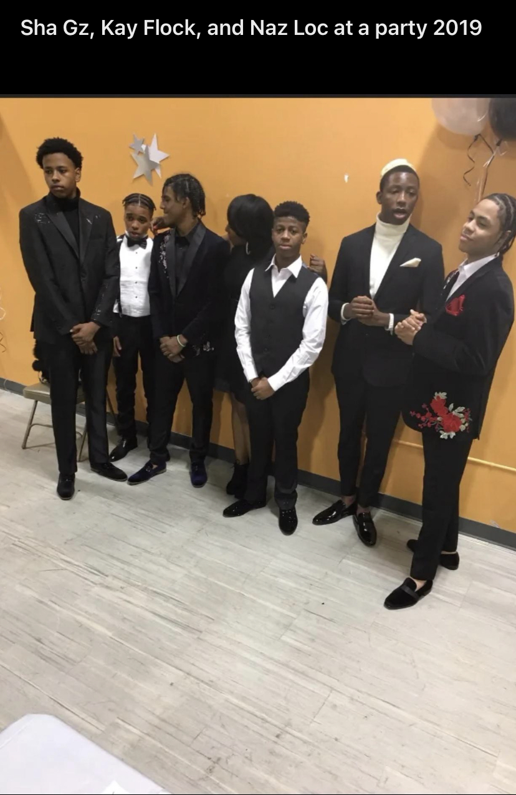
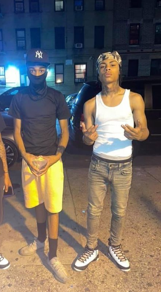

Kay flock, real name Kevin Perez born April 20, 2003 in The Bronx, NY, is a Dominican-American rapper who has opened the door for his borough to shine with its own genre; Bronx Drill.
Kay flock's first release, FTO, was released right after COVID lockdowns hit on May 26, 2020. This came about after his friend, fellow rapper B-Lovee brang Kevin along to his studio sessions, as well as him telling himself that he's going to take rapping serious after he get out of jail when he was locked up at 16 years old. In the track, you can also hear Kevin's half-brother, fellow rapper Jo Wvttz calling in from jail while locked up following a robbery charge. Afterwards, he followed up with collaboration tracks with 26AR, Rock gang Dah, KD4LWB, KALIQ and with fellow friends/acquaintances B-Lovee, Dougie B, C-Blu, Set Da Trend & Thunder Bklu. Kay flock is a member of the Bronx-Based Sex Money Murder Bloods & part of an alliance named 700DOA, with 187th Street in Little Italy being the home base he claism, also known as "SevSide".
Kevin Perez grew up in the Belmont section of The Bronx with his mother, and met fellow rappers B-Lovee & Dougie B at a young age, around the age of 11. In their inner-circle, Kevin Perez was known as the "hype man" in the group, while B-Lovee was known as the rapper, & Dougie B just as the "energy" of the group.
Kevin Perez was locked up at the age of 16 for unknown reasons (not clarified as he was still a minor) along with his friend Dougie B. Kevin was released early, however, & went to the studio to record & release his first song. It was not until November/December that Dougie B was released, & thats when Kevin teamed up with fellow rapper Sha EK to release the hit track "No More Free Dougie B" in December 2020.
as the new year arrived, Kay Flock, B-Lovee & Dougie B teamed up to release their hit single that really put a spotlight onto bronx drill within New York City called "Brotherly Love". Following this track, he would team up with popular Brooklyn rapper 26AR to drop "Terrorize" Featuring Slayter in May 2021. the next month, he would team up again with brooklyn drill rappers Justo B & LilSkrap1090 to drop their track "T Cardi" featuring his buddy Dougie B. His following track was the one that really got him national attention, and was released a couple weeks after. It is called "Is Ya Ready" and has gained 41 million views since. 2 weeks later, he follows such an energy-filled song with a much more somber and depressing tune called "Being Honest". These 2 tracks were a game changer for Kay Flock & the rest of the bronx drill rappers to come.
However, not all things were fine & dandy. in Early 2021, Fellow rapper E-Dot Baby (R.I.P.) was caught smoking with members of the YGz gang, who are supposedly enemies. Kay flock saw this, & began to tear down the relationship that SevSide & E-Dot's gang, the OY's of Harlem had, as well as the OGz of Sha EK. Ever since then, the 700DOA crew & their companions have been going at it with the OY's & OG'z. This falling out isn't the worst, as in the summer of 2021, a 13 year old crip member & friend of Kay flock named Jayran Eliot, also known as JayRipk, was gunned down broad day, & survailence footage exists of Kay Flock showing up to the enterance of the establishment where JayRipk died. Later that year, another friend of Kay Flock is gunned down broad day, this time being a 16 year old crip member named Nisayah Sanchez, also known as Naz Rolla. This one is more unfortunate, as there are pictures where Kay Flock & Nas were seen together as far back as 2019. Not only that, but Nisayah left behind a 1-year old daughter as well.

